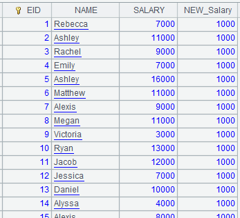
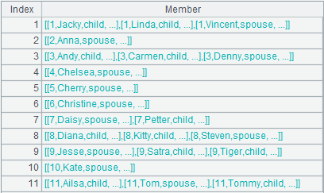
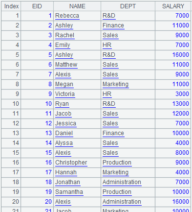

Description:
Append records in cursor/distributed cursor cs to an entity table T.
Syntax:
|
T.append(cs) |
|
Note:
The function append-writes records in cursor cs to entity table T.
When T is a multi-zone composite table, cs can be an ordinary cursor or a multicursor. Each part of the multicursor cs corresponds to one zone of T uniquely. Once appending is finished, index of the composite table will automatically updated.
If a table has an attached table, appending data to the parent table requires that data be ordered by the key and be unique; otherwise, error will be reported.
The parent table can have records that don’t have matches in a sub table, but the opposite situation is not allowed; otherwise the appending to an attached table will be disabled.
Parameters:
|
T |
An entity table/multi-zone composite table |
|
cs |
A cursor |
Options:
|
@i |
Real-time appending whenever a retrieval happens; force an appending when a composite table is closed; by default an appending is executed only when there is a specified number of new records |
|
@a |
Append to a patch file and merge with the existing data for retrieval; create one if there isn’t a corresponding patch file |
|
@x |
It is possible that data in a single cursor corresponds to multiple zones in the multi-zone composite table; in that case the zone table expression needs to be calculated at each append |
Return value:
An entity table
Example:
Ø When parameter T is an entity table:
|
1 |
=create(k1,v1).record([1,10,2,20,3,30,4,40,10,100]) |
Create a table sequence  |
|
2 |
=create(k1,k2,v2).record([1,1,"a",3,1,"c"]) |
Create a table sequence
|
|
3 |
=create(k1,v3).record([1,"red",1,"blue",2,"red",2, "yellow",2,"red",2,"red",4,"black",4,"red",4,"red", 4,"red",4,"red",4,"red",10,"red"]) |
Create a table sequence  |
|
4 |
=file("D:/ctb.ctx") |
|
|
5 |
=A4.create(#k1,v1) |
Create the composite table’s base table, where k1 is a dimension and v1 is the base table’s column |
|
6 |
=A5.attach(table2,#k2,v2) |
Add attached table table2 to A5’s base table; k1 and k2 are the attached table’s dimensions and v2 is its column |
|
7 |
=A5.attach(table3,v3) |
Add attached table table3 to A5’s base table; k1 is the attached table’s dimension and v3 is its column |
|
8 |
=A5.append(A1.cursor()) |
Append cursor records to the base table |
|
9 |
=A6.append(A2.cursor()) |
Append cursor records to attached table table2 |
|
10 |
=A7.append(A3.cursor()) |
Append cursor records to attached table table3 |
|
11 |
=A5.cursor().fetch() |
Return data of the base table  |
|
12 |
=A6.cursor().fetch() |
Return data of the attached table table2
|
|
13 |
=A7.cursor().fetch() |
Return data of the attached table table3
|


Ø
Ø When a patch table is generated:
|
|
A |
|
|
1 |
=connect("demo").cursor("select CLASS,SCORE,STUDENTID,SUBJECT from SCORES") |
Return a cursor |
|
2 |
=file("scores.ctx") |
Generate composite table file scores.ctx |
|
3 |
=A2.create (#CLASS,#SCORE,STUDENTID,SUBJECT) |
Create the composite table’s base table |
|
4 |
=A3.append@a(A1) |
Use @a option to merge append data to a patch table, and we can view patch table file scores.ext.ctx
|
|
5 |
=A3.close() |
Close the composite table |
Ø When parameter T is a multi-zone composite table:
|
|
A |
|
|
1 |
=connect("demo").cursor("select EID,NAME,GENDER,SALARY from employee where GENDER='M' order by SALARY") |
|
|
2 |
=connect("demo").cursor("select EID,NAME,GENDER,SALARY from employee where GENDER='F' order by SALARY") |
|
|
3 |
=[A1,A2].mcursor() |
Return a multicursor |
|
4 |
=file("emp.ctx":[1,2]) |
Generate a file group that contain two files 1.emp.ctx and 2.emp.ctx |
|
5 |
=A4.create@y(#EID,NAME,GENDER,SALARY;if(GENDER=="F",1,2)) |
Create a multi-zone composite table, where if(GENDER=="F",1,2) is a zone table expression, and @y optioin forces creating a new one even if the target file already exists |
|
6 |
=A5.append@i(A3) |
Append-write data in A3’s multicursor to A5’s multi-zone composite table (each part of the multicursor uniquely corresponds to a zone of the multi-zone composite table), where @i option enables an immediate append |
Ø When a single cursor is appended to a multi-zone composite table:
|
|
A |
|
|
1 |
=connect("demo").cursor("select EID,NAME,GENDER,SALARY from employee") |
Return a single cursor |
|
2 |
=file("emp.ctx":[1,2]) |
Generate a file group |
|
3 |
=A2.create (#EID,NAME,GENDER,SALARY;if(GENDER=="F",1,2)) |
Return a multi-zone composite table |
|
4 |
=A3.append@x(A1) |
Use @x to append data in the single cursor to the multi-zone composite table, where a zone table expression is calculated at each append |
|
5 |
=A3.close() |
Close the composite table |
Ø